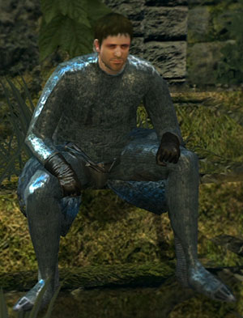
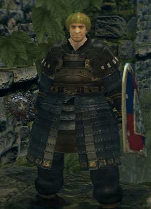
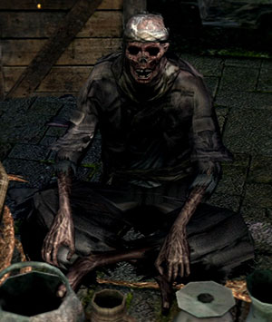

Npc
Right from the first bonfire there are a few very close Npcs that can make your quest much easier.
Crestfallen Warrior
A veteran Undead warrior. He's despairing over the fact this "Fate of the Undead" thing is like an impossible task and is very pessimistic because of that. Like his Demon's Souls counterpart, he's the first guide you have as soon as you arrive at Lordran.
Talk to him often to get clues about where to go next. He is one of the most helpful Npcs as if can be quite confusing on where to go next.
Petrus of Thorolund
Petrus is a cleric of the Way of White from Thorolund. He guards Princess Rhea who's on a pilgrimage to find the Rite of Kindling, along with her other bodyguards, Vince and Nico. The first time you meet him, he'll be alone in the Firelink Shrine, waiting for Rhea to arrive. Petrus is able to sell several Miracles early in the game that can give you a good head start.
Undead Merchant
The undead merchant can be found in the Undead Burg. From the Bonfire, exit out of the bonfire room and kill the Undead Soldier with the crossbow and the three Armored Hollows on the area below to the right. Kill the two Undead Soldiers with spears on the opposite roof top area. Smash the crates (in the spear soldier area) around the stairs going down. Once in the room downstairs deal with an Armored Hollow hidden behind some crates, as he will surprise you later while talking to the merchant otherwise. The merchant is out of the door opposite to the bottom of the stairs on a ledge. This merchant sells a bow, it is the first one you can get. This Undead sells the items he looted from the corpses of adventurers. He has a hollowed appearance, but is not fully hollow. He has a "companion" named Yulia (in reality his uchigatana(katana)/bucket/imaginary pet), showing that he's not perfectly sane either.